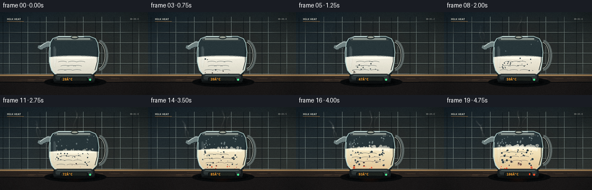
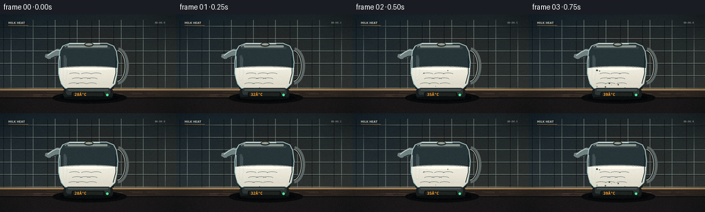

CODING AGENTS AS PIXEL WORLD MODELS
traex/DeepSeek-V4.1-Flash · phygen_107
点击播放 · 原生 RGB 像素
逐轮保存的候选
回放视频、检查图与代码变化。
每份候选均可单独播放。实际图片检查记录在下方工具轨迹中。
候选 01播放与检查图
点击播放 · 原生 RGB 像素

展开代码变化
--- 上一保存版本
+++ 本次保存版本
@@ -0,0 +1,384 @@
+from pathlib import Path
+import math
+
+import numpy as np
+from PIL import Image, ImageDraw, ImageFilter, ImageFont
+
+import artifact_io
+
+
+CASE_DIR = Path(__file__).resolve().parent
+W, H, N = 256, 144, 20
+S = 4
+SW, SH = W * S, H * S
+
+
+def sc(value):
+ return int(round(value * S))
+
+
+def box(values):
+ return tuple(sc(value) for value in values)
+
+
+def lerp(a, b, t):
+ return a + (b - a) * t
+
+
+def smoothstep(edge0, edge1, value):
+ t = np.clip((value - edge0) / (edge1 - edge0), 0.0, 1.0)
+ return t * t * (3.0 - 2.0 * t)
+
+
+def mix_color(a, b, t):
+ return tuple(int(round(lerp(a[i], b[i], t))) for i in range(3))
+
+
+def radial_glow(size, center, radius, color):
+ w, h = size
+ yy, xx = np.mgrid[0:h, 0:w]
+ distance = np.sqrt((xx - center[0]) ** 2 + (yy - center[1]) ** 2)
+ strength = np.clip(1.0 - distance / radius, 0.0, 1.0) ** 2.1
+ rgba = np.zeros((h, w, 4), dtype=np.uint8)
+ rgba[..., :3] = color
+ rgba[..., 3] = (strength * 255).astype(np.uint8)
+ return Image.fromarray(rgba, "RGBA")
+
+
+def make_background():
+ yy = np.linspace(0.0, 1.0, SH, dtype=np.float32)[:, None]
+ xx = np.linspace(0.0, 1.0, SW, dtype=np.float32)[None, :]
+ top = np.array([24, 34, 39], dtype=np.float32)
+ bottom = np.array([48, 54, 53], dtype=np.float32)
+ wall = top[None, None, :] + (bottom - top)[None, None, :] * (yy[..., None] ** 0.8)
+ wall = wall + (xx[..., None] - 0.5) * np.array([7, 2, -4], dtype=np.float32)
+ bg = Image.fromarray(np.clip(wall, 0, 255).astype(np.uint8), "RGB").convert("RGBA")
+
+ bg.alpha_composite(
+ radial_glow((SW, SH), (sc(135), sc(66)), sc(105), (185, 108, 48)).point(
+ lambda value: int(value * 0.32)
+ )
+ )
+ draw = ImageDraw.Draw(bg, "RGBA")
+
+ # Quiet tiled backsplash, slightly out of focus.
+ for x in range(-16, W + 32, 32):
+ draw.line((sc(x), sc(8), sc(x), sc(109)), fill=(112, 126, 122, 18), width=sc(0.65))
+ for y in range(17, 111, 18):
+ draw.line((0, sc(y), SW, sc(y)), fill=(157, 169, 161, 15), width=sc(0.55))
+ draw.line((0, sc(y + 1), SW, sc(y + 1)), fill=(8, 16, 18, 24), width=sc(0.5))
+ for x in range(4, W, 32):
+ draw.line((sc(x + 1), sc(9), sc(x + 1), sc(108)), fill=(6, 12, 15, 24), width=sc(0.5))
+
+ # Countertop with a thin highlight and a dark front edge.
+ draw.rectangle((0, sc(108), SW, sc(127)), fill=(42, 35, 31, 255))
+ draw.rectangle((0, sc(108), SW, sc(111)), fill=(111, 91, 68, 255))
+ draw.rectangle((0, sc(109), SW, sc(110)), fill=(184, 144, 91, 110))
+ draw.rectangle((0, sc(121), SW, sc(144)), fill=(25, 23, 23, 255))
+ draw.rectangle((0, sc(121), SW, sc(122)), fill=(8, 10, 11, 180))
+
+ # Countertop grain.
+ rng = np.random.default_rng(91)
+ for _ in range(34):
+ x = int(rng.integers(0, SW))
+ y = int(rng.integers(sc(112), sc(121)))
+ length = int(rng.integers(sc(8), sc(38)))
+ draw.line((x, y, min(SW, x + length), y), fill=(106, 82, 60, int(rng.integers(8, 24))), width=1)
+
+ # Soft shadows anchor the kettle to the counter.
+ draw.ellipse(box((76, 113, 184, 130)), fill=(8, 10, 11, 135))
+ draw.ellipse(box((86, 116, 173, 127)), fill=(4, 6, 7, 150))
+ return bg
+
+
+def body_polygon():
+ return [
+ (87, 53), (91, 46), (101, 42), (155, 42), (165, 46), (169, 54),
+ (171, 69), (170, 86), (167, 101), (159, 109), (151, 112),
+ (104, 112), (96, 109), (89, 101), (85, 86), (85, 68),
+ ]
+
+
+def make_body_mask():
+ mask = Image.new("L", (SW, SH), 0)
+ ImageDraw.Draw(mask).polygon([(sc(x), sc(y)) for x, y in body_polygon()], fill=255)
+ return mask
+
+
+def liquid_surface(t):
+ # The boiling foam lifts the visible surface a little in the final second.
+ return lerp(78.0, 70.5, smoothstep(0.48, 1.0, t))
+
+
+def draw_handle(draw):
+ # Handle sits behind the glass body.
+ draw.arc(box((154, 48, 187, 102)), 276, 86, fill=(11, 17, 19, 255), width=sc(7.0))
+ draw.arc(box((154, 48, 187, 102)), 276, 86, fill=(93, 103, 101, 255), width=sc(4.0))
+ draw.arc(box((157, 52, 182, 98)), 278, 84, fill=(166, 169, 158, 190), width=sc(1.2))
+ draw.rounded_rectangle(box((158, 49, 167, 57)), radius=sc(3), fill=(22, 27, 28, 255))
+ draw.rounded_rectangle(box((157, 95, 167, 103)), radius=sc(3), fill=(22, 27, 28, 255))
+
+
+def draw_spout(draw):
+ points = [
+ (91, 51), (83, 50), (77, 53), (71, 57), (66, 58),
+ (65, 62), (70, 65), (76, 64), (84, 61), (92, 61),
+ ]
+ draw.polygon([(sc(x), sc(y)) for x, y in points], fill=(111, 128, 128, 225))
+ draw.line([(sc(89), sc(53)), (sc(82), sc(52)), (sc(76), sc(55)), (sc(69), sc(60))],
+ fill=(205, 218, 212, 180), width=sc(1.1))
+ draw.line([(sc(89), sc(60)), (sc(81), sc(61)), (sc(74), sc(64))],
+ fill=(22, 33, 36, 220), width=sc(1.3))
+
+
+def draw_glass_scene(base, t, frame):
+ scene = base.copy()
+ draw = ImageDraw.Draw(scene, "RGBA")
+
+ # Rear body and spout.
+ draw_spout(draw)
+ draw_handle(draw)
+ draw.polygon([(sc(x), sc(y)) for x, y in body_polygon()], fill=(39, 53, 57, 245))
+
+ # Inner shadow and the pale metal heating plate.
+ draw.ellipse(box((91, 102, 165, 112)), fill=(22, 29, 30, 255))
+ draw.ellipse(box((97, 102, 159, 109)), fill=(69, 70, 65, 255))
+ heat = smoothstep(0.24, 0.92, t)
+ coil_color = mix_color((78, 67, 56), (255, 76, 30), heat)
+ for y in (102.5, 105.0):
+ draw.rounded_rectangle(box((97, y, 159, y + 1.7)), radius=sc(0.8),
+ fill=(*coil_color, int(100 + 155 * heat)))
+ if heat > 0.05:
+ glow = radial_glow((SW, SH), (sc(128), sc(104)), sc(33), (255, 91, 35))
+ glow.putalpha(glow.getchannel("A").point(lambda value: int(value * 0.42 * heat)))
+ scene.alpha_composite(glow)
+ draw = ImageDraw.Draw(scene, "RGBA")
+
+ surface = liquid_surface(t)
+ liquid = Image.new("RGBA", (SW, SH), (0, 0, 0, 0))
+ ld = ImageDraw.Draw(liquid, "RGBA")
+
+ # Milk is creamy white at the start and warms subtly as it approaches boiling.
+ warm = smoothstep(0.25, 1.0, t)
+ top_color = mix_color((247, 244, 229), (255, 238, 197), warm)
+ bottom_color = mix_color((218, 214, 198), (226, 194, 142), warm)
+ for y in range(sc(surface), sc(112)):
+ q = max(0.0, min(1.0, (y / S - surface) / max(1.0, 112 - surface)))
+ color = mix_color(top_color, bottom_color, q ** 1.25)
+ ld.line((0, y, SW, y), fill=(*color, 244), width=1)
+
+ # Liquid surface and a raised foam lip.
+ surface_width = 40.0
+ ld.ellipse(box((128 - surface_width, surface - 2.4, 128 + surface_width, surface + 3.2)),
+ fill=(*mix_color((255, 252, 238), (255, 245, 215), warm), 255))
+ ld.arc(box((128 - surface_width, surface - 2.0, 128 + surface_width, surface + 3.5)),
+ 196, 344, fill=(188, 184, 167, 120), width=sc(0.7))
+
+ # Gentle swirls make the milk read as a fluid rather than a flat fill.
+ for j in range(3):
+ cy = surface + 9 + j * 7.2
+ phase = frame * 0.19 + j * 1.7
+ for k in range(3):
+ cx = 108 + 14 * k + 4 * math.sin(phase + k)
+ ld.arc(box((cx - 8, cy - 2, cx + 8, cy + 3)), 202, 337,
+ fill=(255, 252, 241, 38 + j * 7), width=sc(0.55))
+
+ # Bubble field. Positions are continuous over the 20-frame timelapse.
+ bubble_strength = smoothstep(0.08, 0.98, t)
+ rng = np.random.default_rng(771)
+ bubbles = []
+ for i in range(42):
+ bubbles.append({
+ "x": float(rng.uniform(91, 165)),
+ "phase": float(rng.uniform(0, 1)),
+ "speed": float(rng.uniform(0.13, 0.28)),
+ "r": float(rng.uniform(0.45, 1.55)),
+ "start": float(rng.uniform(0.02, 0.76)),
+ })
+ for bubble in bubbles:
+ if t < bubble["start"]:
+ continue
+ activity = smoothstep(bubble["start"], min(1.0, bubble["start"] + 0.16), t)
+ travel = (bubble["phase"] + t * bubble["speed"] * 8.0) % 1.0
+ by = lerp(108.0, surface + 2.0, travel)
+ bx = bubble["x"] + 1.6 * math.sin(travel * 6.0 + bubble["phase"] * 8.0)
+ radius = bubble["r"] * lerp(0.75, 1.45, smoothstep(0.45, 1.0, t))
+ alpha = int((72 + 145 * bubble_strength) * activity)
+ ld.ellipse(box((bx - radius, by - radius, bx + radius, by + radius)),
+ fill=(255, 252, 233, 12), outline=(255, 253, 240, alpha), width=max(1, sc(0.32)))
+ ld.arc(box((bx - radius, by - radius, bx + radius, by + radius)), 195, 284,
+ fill=(255, 255, 250, min(255, alpha + 35)), width=max(1, sc(0.28)))
+
+ # A dense, uneven foam cap develops at a boil.
+ foam = smoothstep(0.46, 0.95, t)
+ if foam > 0:
+ foam_layer = Image.new("RGBA", (SW, SH), (0, 0, 0, 0))
+ fd = ImageDraw.Draw(foam_layer, "RGBA")
+ foam_rng = np.random.default_rng(1259)
+ count = int(18 + 38 * foam)
+ for i in range(count):
+ fx = foam_rng.uniform(93, 163)
+ spread = 1.0 - abs(fx - 128) / 42
+ fy = surface + foam_rng.uniform(-4.0, 2.6) + 1.7 * math.sin(frame * 0.8 + i)
+ fr = foam_rng.uniform(0.7, 2.2) * lerp(0.8, 1.25, foam)
+ fd.ellipse(box((fx - fr, fy - fr, fx + fr, fy + fr)),
+ fill=(255, 250, 229, int(90 + 95 * spread * foam)),
+ outline=(255, 255, 245, int(130 + 80 * foam)), width=max(1, sc(0.3)))
+ liquid.alpha_composite(foam_layer)
+
+ # Clip all liquid and bubbles precisely to the kettle silhouette.
+ body_mask = make_body_mask()
+ liquid.putalpha(Image.composite(liquid.getchannel("A"), Image.new("L", (SW, SH), 0), body_mask))
+ scene.alpha_composite(liquid)
+ draw = ImageDraw.Draw(scene, "RGBA")
+
+ # Glass front, rim, reflections, and subtle blue-green edge tint.
+ outline = [(sc(x), sc(y)) for x, y in body_polygon()]
+ draw.line(outline + [outline[0]], fill=(167, 195, 192, 175), width=sc(1.25), joint="curve")
+ draw.line([(sc(87), sc(61)), (sc(87), sc(94)), (sc(93), sc(105)), (sc(102), sc(109))],
+ fill=(210, 235, 229, 130), width=sc(0.75))
+ draw.line([(sc(168), sc(61)), (sc(168), sc(86)), (sc(164), sc(101))],
+ fill=(17, 29, 33, 150), width=sc(1.0))
+ draw.line([(sc(94), sc(47)), (sc(101), sc(43)), (sc(145), sc(43))],
+ fill=(238, 245, 238, 145), width=sc(0.8))
+ draw.rounded_rectangle(box((94, 47, 160, 50)), radius=sc(1.5), fill=(56, 67, 68, 240))
+ draw.rounded_rectangle(box((98, 45, 156, 48)), radius=sc(1.2), fill=(139, 150, 143, 230))
+ draw.ellipse(box((122, 41, 136, 47)), fill=(42, 51, 51, 255))
+ draw.ellipse(box((124, 42, 134, 45)), fill=(152, 158, 145, 210))
+
+ # Vertical reflected light on the glass.
+ reflection = Image.new("RGBA", (SW, SH), (0, 0, 0, 0))
+ rd = ImageDraw.Draw(reflection, "RGBA")
+ rd.rounded_rectangle(box((92, 59, 96, 96)), radius=sc(2), fill=(224, 242, 238, 34))
+ rd.rounded_rectangle(box((96, 63, 97, 88)), radius=sc(1), fill=(255, 255, 250, 42))
+ reflection = reflection.filter(ImageFilter.GaussianBlur(sc(0.45)))
+ scene.alpha_composite(reflection)
+
+ # Condensation appears on the cool glass above the milk.
+ condense = smoothstep(0.26, 0.88, t)
+ if condense > 0:
+ drops = Image.new("RGBA", (SW, SH), (0, 0, 0, 0))
+ dd = ImageDraw.Draw(drops, "RGBA")
+ drop_rng = np.random.default_rng(440)
+ for i in range(int(22 * condense)):
+ dx = drop_rng.uniform(92, 164)
+ dy = drop_rng.uniform(49, surface - 5)
+ dr = drop_rng.uniform(0.45, 1.15)
+ dd.ellipse(box((dx - dr, dy - dr * 1.4, dx + dr, dy + dr * 1.4)),
+ fill=(223, 242, 237, int(48 + 50 * condense)))
+ dd.point((sc(dx - 0.2), sc(dy - 0.4)), fill=(255, 255, 250, 180))
+ scene.alpha_composite(drops)
+ return scene
+
+
+def draw_steam(scene, t, frame):
+ if t < 0.08:
+ return scene
+ steam = Image.new("RGBA", (SW, SH), (0, 0, 0, 0))
+ draw = ImageDraw.Draw(steam, "RGBA")
+ strength = smoothstep(0.08, 0.92, t)
+
+ def wisp(origin, drift, length, phase, width, alpha):
+ points = []
+ steps = 22
+ for i in range(steps):
+ q = i / (steps - 1)
+ x = origin[0] + drift * q + 4.2 * math.sin(q * 6.0 + phase + frame * 0.24) * q
+ y = origin[1] - length * q
+ points.append((sc(x), sc(y)))
+ for i in range(steps - 1):
+ q = i / (steps - 1)
+ local_alpha = int(alpha * strength * math.sin(math.pi * q) ** 0.7)
+ local_width = max(1, sc(width * (0.35 + 0.85 * q)))
+ draw.line((points[i], points[i + 1]), fill=(235, 238, 227, local_alpha),
+ width=local_width)
+
+ # Steam escapes the spout and the lid vent.
+ wisp((69, 58), -10, 35, 0.2, 2.5, 62)
+ wisp((70, 59), -5, 31, 2.4, 1.7, 48)
+ wisp((126, 42), 6, 37, 1.3, 2.2, 54)
+ wisp((131, 43), 13, 33, 3.7, 1.5, 45)
+ steam = steam.filter(ImageFilter.GaussianBlur(sc(0.85)))
+ scene.alpha_composite(steam)
+ return scene
+
+
+def draw_kettle_front(scene, t, frame, temp):
+ draw = ImageDraw.Draw(scene, "RGBA")
+
+ # Power base.
+ draw.rounded_rectangle(box((92, 108, 164, 121)), radius=sc(4), fill=(24, 29, 30, 255))
+ draw.rounded_rectangle(box((96, 107, 160, 117)), radius=sc(3), fill=(45, 53, 53, 255))
+ draw.line((sc(99), sc(110), sc(157), sc(110)), fill=(124, 137, 132, 155), width=sc(0.8))
+ draw.rounded_rectangle(box((104, 113, 152, 120)), radius=sc(2), fill=(13, 17, 18, 255))
+ draw.rounded_rectangle(box((106, 114, 150, 119)), radius=sc(1.3), fill=(30, 35, 31, 255))
+ draw.ellipse(box((92, 119, 164, 124)), fill=(12, 15, 16, 180))
+
+ # Amber temperature readout, readable at final pixel resolution.
+ try:
+ font = ImageFont.truetype("/usr/share/fonts/truetype/dejavu/DejaVuSansMono-Bold.ttf", sc(5.7))
+ except OSError:
+ font = ImageFont.load_default()
+ label = f"{temp:.0f}°C"
+ draw.text((sc(108.2), sc(113.3)), label, font=font, fill=(255, 157, 42, 255), stroke_width=0)
+ if temp >= 100:
+ draw.rectangle(box((147, 115, 149, 118)), fill=(255, 72, 32, 255))
+
+ # Small indicator lamp on the base.
+ lamp = (76, 240, 149) if temp < 100 else (255, 82, 42)
+ draw.ellipse(box((154, 115.5, 157.5, 119)), fill=(*lamp, 235))
+
+ # A restrained timelapse label and clock in the upper corners.
+ try:
+ small = ImageFont.truetype("/usr/share/fonts/truetype/dejavu/DejaVuSans-Bold.ttf", sc(4.0))
+ tiny = ImageFont.truetype("/usr/share/fonts/truetype/dejavu/DejaVuSansMono.ttf", sc(3.4))
+ except OSError:
+ small = ImageFont.load_default()
+ tiny = ImageFont.load_default()
+ draw.text((sc(12), sc(10)), "MILK HEAT", font=small, fill=(221, 222, 208, 190))
+ draw.line((sc(12), sc(16), sc(41), sc(16)), fill=(196, 135, 72, 165), width=sc(0.45))
+ seconds = frame / 4.0
+ draw.text((sc(225), sc(10)), f"00:{seconds:04.1f}", font=tiny, fill=(211, 213, 202, 150))
+ return scene
+
+
+def render_frame(frame):
+ t = frame / (N - 1)
+ # Most of the rise happens in the second half; the last three frames are above 100 C.
+ temp = 28.0 + 78.0 * (t ** 1.05)
+ if frame >= N - 3:
+ temp = max(temp, 100.2 + (frame - (N - 3)) * 2.4)
+ temp = min(temp, 106.0)
+
+ base = make_background()
+ scene = draw_glass_scene(base, t, frame)
+ scene = draw_steam(scene, t, frame)
+ scene = draw_kettle_front(scene, t, frame, temp)
+
+ # Very subtle vignette keeps attention on the kettle without hiding detail.
+ vignette = Image.new("L", (SW, SH), 0)
+ vd = ImageDraw.Draw(vignette)
+ vd.ellipse(box((-26, -22, 282, 167)), fill=255)
+ vignette = vignette.filter(ImageFilter.GaussianBlur(sc(20)))
+ dark = Image.new("RGBA", (SW, SH), (4, 7, 8, 128))
+ dark.putalpha(Image.eval(vignette, lambda value: int((255 - value) * 0.45)))
+ scene.alpha_composite(dark)
+
+ frame_image = scene.convert("RGB").resize((W, H), Image.Resampling.LANCZOS)
+ pixels = np.asarray(frame_image, dtype=np.float32)
+
+ # Fine grain softens the vector-like edges and gives the glass a photographic finish.
+ rng = np.random.default_rng(9000 + frame)
+ grain = rng.normal(0.0, 1.45, (H, W, 1))
+ pixels = np.clip(pixels + grain, 0, 255)
+ return pixels.astype(np.uint8)
+
+
+def main():
+ frames = np.stack([render_frame(frame) for frame in range(N)], axis=0)
+ artifact_io.save(frames, CASE_DIR)
+ print(f"Saved {frames.shape[0]} frames to {CASE_DIR}")
+
+
+if __name__ == "__main__":
+ main()
候选 02播放与检查图
点击播放 · 原生 RGB 像素


展开代码变化
--- 上一保存版本
+++ 本次保存版本
@@ -319,7 +319,7 @@
font = ImageFont.truetype("/usr/share/fonts/truetype/dejavu/DejaVuSansMono-Bold.ttf", sc(5.7))
except OSError:
font = ImageFont.load_default()
- label = f"{temp:.0f}°C"
+ label = f"{temp:.0f}°C"
draw.text((sc(108.2), sc(113.3)), label, font=font, fill=(255, 157, 42, 255), stroke_width=0)
if temp >= 100:
draw.rectangle(box((147, 115, 149, 118)), fill=(255, 72, 32, 255))
候选 03播放与检查图
可观测工具轨迹
实际执行的命令与返回图片。
命令 1exit 0
/bin/bash -c "pwd && rg --files -g 'prompt.txt' -g 'GENERATION_RULES.md' -g 'task_spec.json' -g '"'!node_modules'"'"
命令 2exit 0
/bin/bash -c 'ls -la'
命令 3exit 0
/bin/bash -c 'cat prompt.txt'
命令 4exit 0
/bin/bash -c 'cat GENERATION_RULES.md'
命令 5exit 0
/bin/bash -c 'cat task_spec.json'
命令 6exit 0
/bin/bash -c "sed -n '1,240p' artifact_io.py"
命令 7exit 0
/bin/bash -c "sed -n '1,260p' player_template.html"
命令 8exit 0
/bin/bash -c "python3 - <<'PY'
from PIL import Image
import numpy as np
print('PIL/numpy ok')
PY
fc-list | head -20"命令 9exit 1
/bin/bash -c 'python3 generate.py'
命令 10exit 0
/bin/bash -c "nl -ba generate.py | sed -n '46,62p;318,342p'"
命令 11exit 127
/bin/bash -c "sed -n '322p' generate.py | xxd -g1"
命令 12exit 0
/bin/bash -c "python3 - <<'PY'
from pathlib import Path
p=Path('generate.py')
s=p.read_text()
for i,l in enumerate(s.splitlines(),1):
if 'label =' in l: print(i, repr(l))
PY"命令 13exit 1
/bin/bash -c "perl -pi -e 's/label = f\"\\{temp:\\.0f\\}ðC\"/label = f\"{temp:.0f}\" + chr(176) + \"C\"/' generate.py
python3 generate.py"命令 14exit 0
/bin/bash -c 'python3 generate.py'
命令 15exit 0
/bin/bash -c 'file frames/00.png frames/19.png inspection.png index.html && command -v tesseract || true'
命令 16exit 0
/bin/bash -c "python3 - <<'PY'
from PIL import Image
import numpy as np
chars=' .,:;irsXA253hMHGS#9B&@'
for idx in [0,7,13,19]:
im=Image.open(f'frames/{idx:02d}.png').convert('L').resize((64,36))
a=np.asarray(im,dtype=float)
a=(a-a.min())/(a.max()-a.min()+1e-6)
print('\\nFRAME',idx)
for row in a:
print(''.join(chars[min(len(chars)-1,int(v*(len(chars)-1)))] for v in row))
PY"命令 17exit 0
/bin/bash -c "python3 - <<'PY'
from pathlib import Path
from PIL import Image
import numpy as np
frames=np.stack([np.asarray(Image.open(p)) for p in sorted(Path('frames').glob('*.png'))])
print('shape',frames.shape,'dtype',frames.dtype)
print('range',frames.min(),frames.max(),'mean',frames.mean(axis=(1,2,3)).round(2))
d=np.abs(np.diff(frames.astype(np.int16),axis=0))
print('adjacent mean abs diff',d.mean(axis=(1,2,3)).round(2))
print('unique pixel values per frame',[len(np.unique(f.reshape(-1,3),axis=0)) for f in frames])
print('artifacts',[(p.name,p.stat().st_size) for p in [Path('pixels.npz'),Path('index.html'),Path('inspection.png'),Path('transition_check.png')]])
PY"命令 18exit 0
/bin/bash -c "python3 - <<'PY'
import json, re
from pathlib import Path
import numpy as np
spec=json.loads(Path('task_spec.json').read_text())
z=np.load('pixels.npz')['pixels']
print('pixels',z.shape,z.dtype,'expected',(spec['height'],spec['width'],spec['frames']))
html=Path('index.html').read_text()
print('html',len(html),'ready marker', '__pixelReady=true' in html,'caption', 'timelapse captures' in html)
print('frames',len(list(Path('frames').glob('*.png'))),'delta count',html.count('\"deltas\"'))
PY"命令 19exit 0
/bin/bash -c 'git status --short 2>/dev/null || true'
命令 20exit 0
/bin/bash -c 'python3 -m py_compile generate.py && du -h frames inspection.png transition_check.png pixels.npz index.html'
命令 21exit 0
/bin/bash -c "python3 - <<'PY'
from pathlib import Path
s=Path('generate.py').read_text()
print('non-ascii',[(i+1,repr(line)) for i,line in enumerate(s.splitlines()) if not line.isascii()])
PY"命令 22exit 0
/bin/bash -c "python3 - <<'PY'
from pathlib import Path
s=Path('generate.py').read_text()
line=s.splitlines()[321]
print(repr(line))
print([(c,hex(ord(c))) for c in line])
PY"命令 23exit 0
/bin/bash -c "sed -i 's/\\xC3\\x82\\xC2\\xB0/\\xC2\\xB0/g' generate.py
python3 - <<'PY'
from pathlib import Path
s=Path('generate.py').read_text()
print('non-ascii lines:',[(i+1,repr(line)) for i,line in enumerate(s.splitlines()) if not line.isascii()])
PY
python3 generate.py"保存候选 3 份；完成命令 23 次；可验证图片返回 0 张。原始 API 响应与完整日志保留在本地。